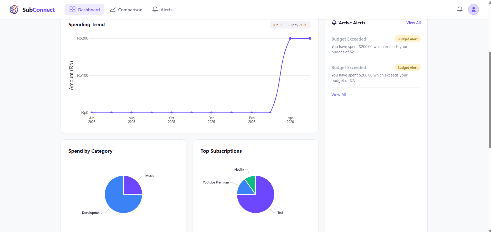
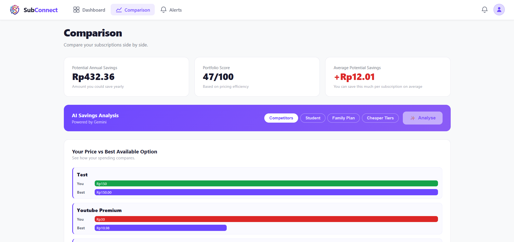

Naturally curious and analytical, I love breaking down problems and uncovering actionable insights to drive meaningful decisions.
Business Analytics Undergraduate @ NUS
Can machine signals tell us how deeply a wafer will be etched before its process run finishes? I built a model that estimates the final wafer-average silicon etch depth using only sensor readings from the first two minutes of a roughly ten-minute Bosch etch.
Each score comes from holding out one entire lot at a time. Lower mean absolute error (MAE) means more accurate predictions of final wafer-average etch depth.
The early model reduced pooled MAE by about 32% relative to wafer order alone. Its error was 0.003 µm higher than the full-trace model on these same lots.
Early sensor features helped on nine of ten held-out lots. Lot 2 was the exception; it performed worse than wafer order alone.
I built cool Geospatial visualisation to analyze top fantasy books on Goodreads. To find Hidden Gems- books with high ratings but low popularity-and visualize the global distribution of fantasy authors.
Data is taken from goodreads top 100 epic fantasy books. Webscrapping of authors's origins and genres are done via python libraries.
This interactive network is taken from my Goodreads account. Select a Genre from the top-left menu to see which authors I read the most.
Explore how I apply technical skills (Python, SQL, Tableau) across global contexts.
Engineered a serverless web application with an interactive dashboard, utilizing real-time charting libraries to visualize spending trends and portfolio efficiency.
AI Integration: Integrated the Gemini API to architect a savings analysis tool that cross-references user subscriptions against market benchmarks to calculate potential monthly savings. Coordinated effective communication through daily developmental sprints using Agile & Git.
testuser@test.com | Password: 123456

Dashboard View: Provides users with a comprehensive overview of their spending trends, utilizing dynamic charts to categorize expenses and highlight top subscriptions to quickly identify areas of high expenditure.

AI Savings Analysis: Leverages the Gemini API to analyze the user's current subscription portfolio. It automatically cross-references costs against market competitors, family plans, or student tiers to generate an efficiency score and calculate exact potential savings.